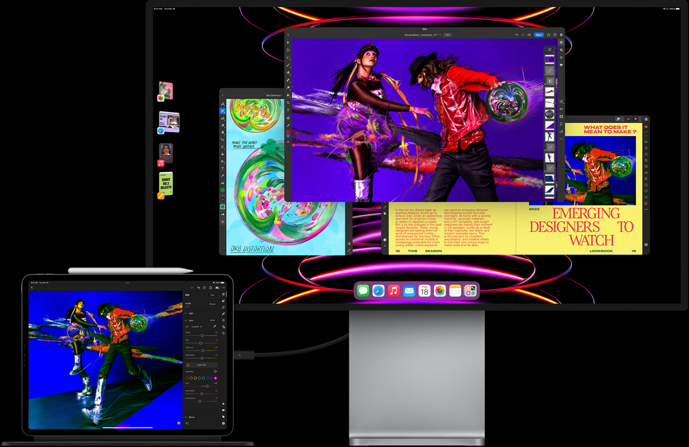

Powered by the same Apple M2 chips you get in MacBooks, the iPad Pro is one of the fastest and most well-built tablets you can buy today. It’s available in two sizes (11 and 12.9 inches) and works with a range of accessories including the Apple Pencil and the extremely useful (but pricey) Magic Keyboard. And thanks to their 120Hz ProMotion mini-LED displays, the iPad Pro’s screen boasts strong brightness and fluid visuals, regardless of whether you’re watching a movie or creating a slideshow presentation. Recent versions of iPadOS have also made Apple’s most premium tablet a much more capable work device, with the addition of new sidebars for quickly switching between apps, a more powerful desktop-like UI for Safari, and various new toolbars throughout.
The main downside is that starting at $800 for a base 11-inch model with 128GB of storage, Apple’s iPad Pros aren’t cheap, and that’s before you tack on any extras like cellular connectivity or a keyboard. But considering there’s a good chance a new iPad Pro is more powerful than your current laptop, there isn’t really anything you can throw at Apple’s top-of-the-line tablet it can’t handle.
One final note is that if you like the iPad Pro but want something a bit more affordable, there’s also the fifth-gen iPad Air. This one is powered by the M1 chipset, but it has Apple Pencil support and optional 5G connectivity. And with a 10.9-inch screen, it’s basically the same size as the smaller iPad Pro too. The main difference is that the iPad Air’s display isn’t quite as bright and doesn’t support a 120Hz refresh rate. But if you’re ok with that, the 5th-gen iPad Air is essentially an iPad Pro with a less fancy screen that starts at $599 instead of $799.